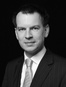

Mag. Christoph Stummvoll
Leiter Werbung, CRM & Events, Peugeot Austria Gesellschaft m.b.H. Mag. Christoph Stummvoll ist als Leiter Werbung, CRM&Events, bei Peugeot für sämtliche euwagenKommunikationsmaßnahmen (außer PR) in Österreich verantwortlich. Sein Arbeits-Schwerpunkt liegt in der Markenführung sowie Entwicklung und Umsetzung von integrierten Werbe- / Mediastrategien und -kampagnen. Nach dem Studium der Handelswissenschaften an der Universität Linz und der Ecole Supérieure de Commerce in Brest, Frankreich, war Mag. Stummvoll bei der Marketing/Strategieberatung Grolman.Result (www.grolman.com) in Frankfurt/Main tätig. Ab Herbst 2001 leitete er die Werbe- und Kommunikationsabteilung von Hagleitner Hygiene International (Zell/See, www.hagleitner.com) und wechselte Anfang 2004 zu Peugeot Austria (www.peugeot.at) nach Wien. In einer Vielzahl von Auszeichnungen, die während seiner Arbeit für Peugeot erreicht wurden, können als die wichtigsten der MEDIAAWARD 2010 in Gold, der EFFIE 2007 in Gold, der ADGAR 2009 Online-Sonderpreis und der OTTOCAR 2007 in Silber (Frankfurt/Main) bezeichnet werden.